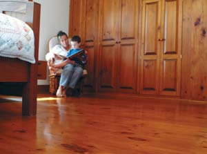
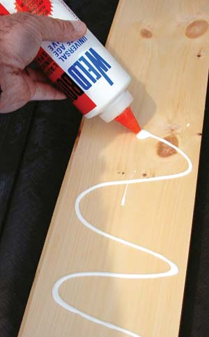
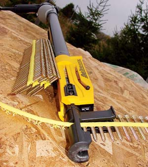
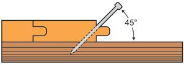

Pine makes a terrific finished floor. I installed more than 1,000 square feet of pine flooring in my home about 15 years ago. It was easy to put down, the price was better than that of many other types of wood, and the floors still look great.
Many people who want to install wood floors look exclusively at oak and other hardwoods, but softwoods such as pine are usually less expensive. It’s true that pine dents more easily than oak, and that’s why it’s not the best choice for every room. But if you believe that a few dents and dings simply add character to a wood floor, then pine flooring is a great option. In fact, the options for inexpensive wood flooring extend to other softwood species including spruce, fir and larch.
In some regions, you can buy unfinished pine flooring for less than $1 per square foot, especially if you can find a local sawmill instead of going to a lumberyard. By comparison, oak typically is up to twice as expensive as pine. Carpet starts at around $1.20 per square foot, and vinyl starts at $1.50 per square foot.
Softwood is rarely marketed as flooring, so you need to know the technical names of the kind of wood you’re looking for. My favorite floor-grade softwood is standard 1-by-6 pine in No. 1 and No. 2 grades with tongue-and-groove edges. These grades of wood may have a few knots and other imperfections. The tongue and groove edge allows me to install the boards without any visible nails. If you want a floor that’s more rustic and even more economical, then take a look at No. 3 pine in 6 to 10 inch widths, without tongue-and-groove edges. The substantial knots in No. 3 pine look wonderful when the flooring is installed and finished.
Prices vary widely, but near my home in Ontario, No. 1 pine sells for about $1 or more per square foot at sawmills, and for about $2 at lumberyards. No. 3 pine is priced as reasonably as wood can get, from about 60 to 80 cents per square foot from sawmills, and double that at lumberyards.
If spruce is common where you live, it is another good softwood for flooring. Spruce is available in various widths, with or without tongue-and-groove edges. Spruce is harder than pine, and therefore more resistant to denting. But be careful about twists and bends in this wood - spruce sometimes has a mind of its own. It’s fine for floors; just look carefully before you buy a pile of boards. Spruce that is bowed, cupped or bent is difficult to install.
Installing a pine floor is surprisingly easy. The instructions below will guide you through the most important steps. Before buying wood, measure your floor area carefully. Divide complex areas into squares, and measure angled areas as if they were square. Don’t forget closets. Round up, and add 5 percent to the total to allow for cutting waste and defective boards.
A solid wooden subfloor is the best starting point for ensuring that your wood flooring is firm and quiet underfoot. Subfloors help provide additional support, reduce sound transmission and make your floor more draft-proof. In certain situations, you can install wood floors on concrete slabs (see “Installing Wood on Concrete”) but fastening wood onto wood is simplest.
Nothing firms up a wooden subfloor better than a bunch of No. 8 deck screws driven 6 inches apart, extending 1 inch deep into the underlying floor joists. If your house already has a plywood subfloor fastened with nails only, add screws to firm up the boards and eliminate squeaks. If your subfloor is plank lumber, you’ll get the best results if you add half-inch-thick plywood on top to smooth out the joints.
You can use an electric drill to drive in floor screws, but if you have more than a few hundred square feet of subfloor to fasten down, consider renting a collated screw gun. The gun’s yard-long nose lets you work without straining your back by bending over. Strips of plastic-bound screws automatically feed into the gun tip one at a time. Every time you push the nosepiece of the tool against the subfloor with the motor running, you drive in another screw. Be sure you choose a screw length that drives through the underlying planks, subfloor and at least 1 inch into each joist.
Before you get started, be sure to get safety glasses, a dust mask and hearing protection ready. Begin laying out your floor with pine boards that lie true to the longest wall - this is important, because the first row of boards sets the position for all the boards that follow. To align the first row so it’s perfectly straight, start by using a taut string to mark a guideline, measuring a quarter inch away from the wall.
The traditional approach to installing solid wood flooring uses finishing nails only, driven at an angle through the tongue of each board. But this approach is problematic, because nails loosen over time and cause squeaky floors. To make wood flooring silent underfoot, you should first glue down each board using flexible carpenter’s glue from a squeeze bottle, then pound in some finishing nails. (You also can put down a layer of glue under your subfloor for added protection.) This combination allows the flooring to expand and contract seasonally, while remaining completely silent. Not all brands of wood glue remain flexible when dry. I usually use Weldbond glue, which works well, but you can test the glue you have by putting some on wax paper. Let it dry thoroughly and then peel off the glue. If you can bend the glue without breaking it, the glue is flexible enough to use for your floor.
When it’s time to lay down the first row of pine wood, choose your longest, straightest boards, line them parallel to the longest wall of the room using the marks that you made with the taut string and apply squiggles of glue to their bottom surfaces. Put a board in place. Now drive finishing nails through the pine wood and into the subfloor about one-half inch from the wall - be sure to get close enough to the wall that the baseboard and trim will cover the nail heads later. Complete the anchoring job by driving 11/2 inch finishing nails through the tongue of the board at a 45 degree angle.
Even if you have a flooring nailer, drive these first nails into the tongue by hand, using a nail set to sink the heads below the wood surface. Flooring nailers are designed to drive floorboards sideways as they sink nails. The sideways action tightens board-to-board gaps nicely, but can knock the first row of floorboards out of alignment. It’s best to wait until you have a few boards anchored by hand before you reach for the flooring nailer. As you continue, cut and install subsequent rows of floorboards so their joints don’t align with previous board-to-board joints.
If the area of your pine floor is small, you can smooth the floor using nothing more than a hand-held belt sander. You’ll have best results if you first sand perpendicular to the direction of the grain using an 80 grit belt on the machine. This will create surface scratches, but these can be easily removed later. Sanding across the grain like this is the fastest way to achieve a level surface. After the board-to-board joints become level, sand parallel to the grain with the same 80 grit belt. Complete the sanding job with a 120 grit disk in a random orbit sander.
The best way to illuminate the floor surface and highlight areas that need more sanding is with a 500 watt halogen light placed at floor level. A shop vac is invaluable to clean the floor before finishing - just make sure to use a soft bristle floor attachment. The hard, plastic floor wand of the shop vac can leave marks on your light, newly sanded softwood floor.
Several finishing options are available for pine floors: tung oil, varnish and stains. Be aware that dark stains will accentuate the inevitable dents on a pine floor, because the underlying lightly colored wood shows up prominently when the finish is damaged or worn away. Consider leaving pine wood unstained or only lightly stained before coating it with a clear coat of polyurethane or oil. If you opt for a darkly colored softwood floor, keep a jar of stain handy to touch up areas that become damaged and show through as a light color. Rubbing some stain into the damaged zone gives it an antique, burnished appearance as the area gathers stain and gets slightly darker than the surrounding wood.
The floodlight that was so helpful while sanding is now even more important for applying an even finish. When applying stain or sealer, the floodlight highlights areas you’ve missed and makes deficiencies easy to see. If you are brushing on a liquid stain, immediately wipe it evenly over the wood, and then remove the excess stain that hasn’t soaked in. When you apply a sealer, use a 4-inch-wide brush, moving it back and forth with the wood grain. Some professionals apply the sealer with a paint roller, but I’ve never found they work well. A brush is a much easier option, and it’s pretty fast, too.
To bring out the full beauty of the wood, you must sand lightly between coats of polyurethane or varnish. This operation removes tiny wood fibers that popped up from the surface of the floor as they absorbed finishing liquid and then hardened. Let the first coat dry completely, then smooth it with a palm sander fitted with 220 grit sandpaper. Repeat the light sanding after the second and third coats have dried. Leave the fourth coat unsanded, but let it dry completely before allowing foot traffic.
Few other flooring choices can beat pine in terms of satisfaction, beauty and cost. It’s a DIY option that’s as down to earth as any gorgeous floor can get.
Concrete basement floors are too damp for most kinds of wood flooring, but not so for concrete slab floors poured at ground level - provided you install the wood flooring on an appropriate base.
For your base, begin by fastening sheets of three-fourths inch plywood on top of your concrete using a type of screw made for this purpose (usually manufactured by Tapcon). If you live in a hot, humid climate, you need to insulate your floor to protect against condensation. To do this, add a 1 inch layer of extruded polystyrene foam underneath the plywood. This rigid sheet material is dense enough to support plywood and a finished floor without the need for any other support. Once the plywood is down, install your softwood flooring on top.
Wood expands as it absorbs moisture and shrinks as it dries, which can lead to buckled floorboards or gaps between boards. To avoid these problems, the moisture content of any wood flooring you install must match the average humidity level of your home.
Most softwoods used for flooring have been dried in a kiln, a sealed chamber that removes moisture faster than if the wood were drying in the open air (called “air-dried” lumber). You certainly can use air-dried wood for flooring, but just because wood is kiln-dried or has been stacked in a barn for the last decade don’t assume that its moisture content matches the average humidity level of your home. In fact, it’s probably quite different.
A moisture meter is the best tool to find the moisture content of your wood flooring. This hand-held device measures the electrical resistance of wood and translates it into a percentage of moisture content. The more moisture, the lower the electrical resistance. Flooring for homes in cold climates should be in the 7 percent to 9 percent range; 10 percent to 14 percent for homes in warm climates.
If you can’t get a moisture meter to check wood flooring before purchasing it, you can acclimate the wood to your home’s humidity level. Start by assuming that your wood is too wet, then stack it in the same room where you will install it, which gives the wood a chance to reach moisture equilibrium with the surrounding air.
The best time to acclimate wood flooring is when indoor humidity levels are at their lowest - typically in the winter. To promote air circulation, stack your flooring with thin strips of wood between each layer. Aim an oscillating fan at the pile and leave it on continuously. Each day, measure and mark the width of a half-dozen floorboards, recording their widths with a pencil on the boards themselves. Even the most moisture-mismatched wood will stabilize completely in no more than two weeks. You’ll know when it’s ready because board width will stabilize.
|
 STEVE MAXWELL Pine wood is beautiful, easy to install and less expensive than most carpet, vinyl or hardwood flooring. |
 STEVE MAXWELL Although glue isn’t part of traditional wood flooring installation, the right kind can ensure a virtually squeak-free floor. |
 STEVE MAXWELL A collated screw gun is the ultimate subfloor installation and reinforcement tool. The yard-long nose and auto-feed system save time and prevent back strain. |
|
 STEVE MAXWELL For tongue-and-groove flooring, nails should be driven into the tongue of the boards at a 45 degree angle. |
|
|